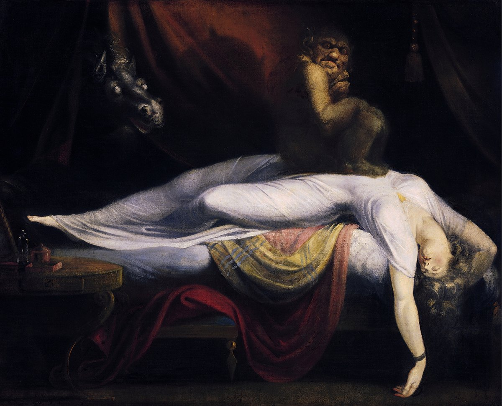
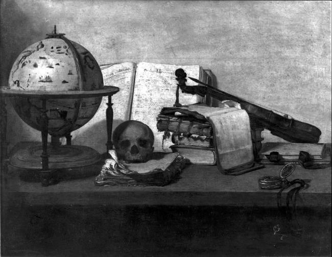

How can artists use imagination and unexpected combinations to express ideas that go beyond ordinary reality?
A fish swimming through a bedroom. A staircase that leads nowhere. A clock draped over a tree branch like a wet towel. Surrealist artists built exactly this kind of impossible image, and your collage skills are the perfect tool for building your own. This week's lesson is short; most of your time goes to building the module's marquee project.
👀 PART 1 · LOOK FIRST
Surrealist artists loved placing two ordinary, unrelated things side by side to make something strange and new. This is called juxtaposition. Look at the simple example below: an everyday object placed somewhere it does not belong.

Henry Fuseli (British-Swiss, 1741–1825), The Nightmare, 1781. Oil on canvas. Detroit Institute of Arts. Public domain (published 1781). Source: Wikimedia Commons
A real historical example, not a diagram. Decades before Surrealism had a name, Fuseli combined a sleeping woman, a demon, and a ghostly horse, three things that do not belong in the same room, into one unsettling scene. That same move, taking ordinary things and placing them where logic says they cannot go, is juxtaposition.
💭 QUICK CHECK-IN · NO WRONG ANSWER
If you could put one ordinary object somewhere it absolutely does not belong, what would it be?
📚 PART 2 · SURREALISM
Surrealism is an art movement that began in the 1920s A.D., growing directly out of Dada, which you studied in Week 1. Where Dada was about chaos and protest, Surrealism turned inward, toward dreams, imagination, and the subconscious mind, the part of the mind holding thoughts and feelings outside normal awareness. Surrealist artists believed reality was more than what we can see and measure; it also included the strange logic of dreams.
Two techniques Surrealist artists relied on:
Juxtaposition: placing unrelated objects together to create a new, often unsettling meaning.
Symbolism: using an object, image, or color to represent something deeper than itself, an idea, a fear, a memory.
Look at the simple example below: the same clock shape, but standing for two different ideas depending on how it is treated.

Anonymous (formerly attributed to a student of Jan Davidsz. de Heem, Dutch, 1606–1683/84), Vanitas Still Life with Books, a Globe, a Skull, a Violin, and a Pocket Watch, ca. 1650. Public domain (published before 1931). Source: Wikimedia Commons
A real historical example, not a diagram. None of these objects are the point; the globe, skull, violin, and open pocket watch each stand for something bigger, knowledge, mortality, pleasure, and time running out. This kind of painting, called a vanitas still life, is centuries older than Surrealism, but it works the same way Dali's melting clock works: an ordinary object, treated a certain way, becomes a symbol.
Salvador Dali and Rene Magritte are among the best-known Surrealist painters. Dali painted dreamlike, hallucinatory scenes, famously melting clocks draped over a landscape. Magritte painted ordinary objects in impossible settings, using realistic technique to make the strange feel almost believable. You can view examples of their work at major museum sites: search their names at moma.org or the museum housing a specific piece (their work is still under copyright, so view it at the source rather than a copied image).
🎨 SURREALISM'S LEGACY
Surrealism's willingness to paint the imagined instead of only the observed opened the door for later movements and is still visible today in film, animation, video games, and advertising, anywhere an artist builds a world that bends the rules of reality on purpose.
🔍 PART 3 · BUILDING YOUR SURREALISM COLLAGE IN PIXLR E
Your project this week combines everything you have learned in Module 3 so far: layers, masking, blend modes, and balance, aimed at a single Surrealist idea.
💡 PIXLR E WORKFLOW: SURREALISM COLLAGE
1. Decide your impossible combination first (write it as one sentence: "a ___ where a ___ should be"). 2. Gather or take the images you need and bring each in as its own layer. 3. Use masking to blend your combined elements into one scene rather than leaving obvious pasted rectangles; paint the mask to soften or hide edges exactly where you want. 4. Apply a blend mode to at least one layer to help it feel like it belongs (Multiply to match shadows, Screen to add a glow, Overlay to unify color and light across layers). 5. Arrange your composition with a balance type from last week that fits the mood you want. 6. Check the whole piece zoomed out before flattening and exporting.
Keep your idea simple. One strong, clear impossible combination, built carefully, communicates more than five combinations thrown together.
⚡ TRY IT · SURREALISM CHECK
Read each case, decide, then check your answer.
Placing a giant teacup in the middle of a forest is an example of:
Surrealist artists were especially interested in dreams and the:
⚠️ WORTH KNOWING · AI IMAGE GENERATION AND SURREALISM
AI image generators can produce dreamlike, impossible images from a text prompt, which might seem like a shortcut to a "surreal" picture. But this project is graded on your own layering, masking, and blending decisions, the same craft choices real Surrealist artists made by hand. A generated image skips the very skills this week is teaching.
📝 VOCABULARY
SurrealismAn art movement from the 1920s exploring dreams, imagination, and the subconscious mind.
JuxtapositionPlacing unrelated objects together to create new meaning.
SymbolismUsing an object, image, or color to represent a deeper idea or feeling.
SubconsciousThoughts, memories, and feelings outside of normal conscious awareness.
Layer MaskA tool that hides part of a layer without deleting its pixels.
Blend ModeA setting that controls how a layer's pixels combine with layers below it.
BalanceThe arrangement of visual weight in a composition to create stability.
Dream ImageryVisuals that resemble the strange, fluid logic of a dream.
➡️ WHAT YOU'LL DO NEXT (IN CANVAS)
1
Planning: One-Sentence Concept · Week 3
Write your "a ___ where a ___ should be" concept sentence and list the images you need. Completion grade.
2
Quiz: Surrealism · Week 3
8 questions, auto-graded in Canvas.
3
Project: Surrealism Collage · Week 3
Build your Surrealism Collage in Pixlr E using masking and blend modes. This module's marquee graded project; you refine and submit it in Week 4.
💪 THE BIG IDEA
Surrealism gave artists permission to paint what they imagined instead of only what they observed. Your layers, masks, and blend modes are the tools that let an impossible idea look convincing. Next week you refine this piece and prepare it for your portfolio.
Optima Academy Online · DIGITAL ART IMAGING · Quarter 3 · Student Lesson Page